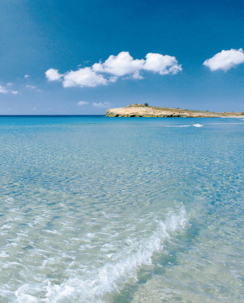
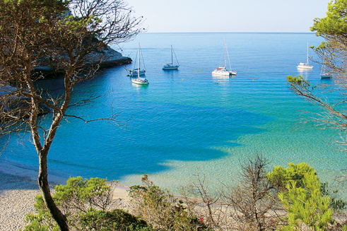
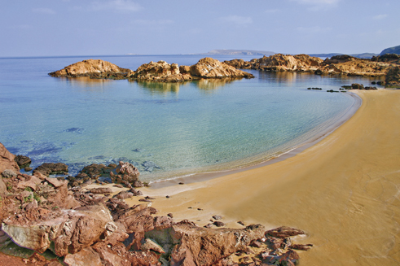

Les plages et le tourisme. Engagés pour l’environnement
Le phénomène touristique n’est pas exclu lorsqu’il s’agit de pouvoir préserver notre capital naturel et culturel, sans mettre en danger les jours futurs. Cet engagement peut être compatible avec le développement dans le présent. C’est ce qu’on appelle le tourisme durable à Minorque. Ce concept a été mis en place en 1993 lorsque l’Unesco déclare Minorque “Réserve de la Biosphère ”.
D’un point de vue social, le tourisme rend possible de satisfaire les désirs des personnes souhaitant connaître de nouveaux lieux, de nouvelles cultures et de rompre avec la routine. Les aspects les plus appréciés d’une destination touristique sont, son hospitalité, sa gastronomie, son offre culturelle, ses paysages, son état naturel et surtout ses plages. Minorque répond à toutes ces exigences.
Suivant la logique que s’il n’y a pas de durabilité on ne pourra pas offrir une qualité, le secteur touristique de l'île s'efforce dans le but de promouvoir la mise en place de processus de protection environnementale, afin de respecter les équilibres fragiles qui caractérisent Minorque comme lieu de vacances. La participation responsable de tous les secteurs engagés dans la planification touristique avec pour pari l’innovation culturelle, technologique et professionnelle sont les objectifs prioritaires de cette nouvelle stratégie orientée à préserver la qualité de Minorque comme destination et à répondre aux nouvelles demandes des touristes du XXIème siècle.